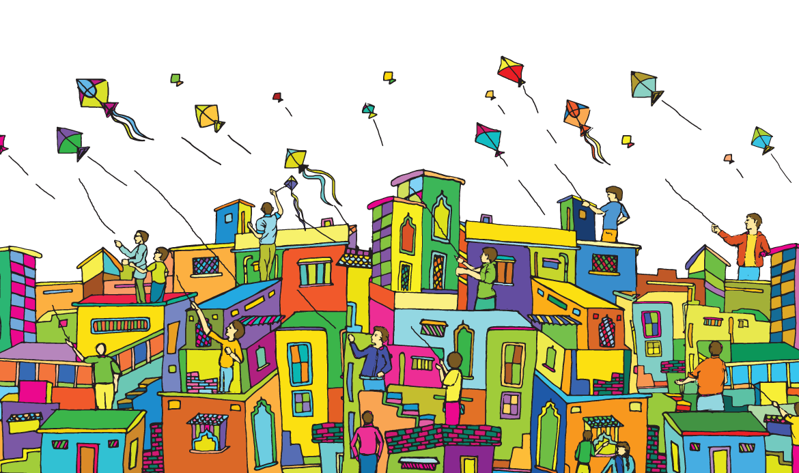

Indian people present several cultural festivals according to their own cultures. Basically the
four major religion groups of India namely Hinduism, Islam, Christianity and Sikhism celebrate several colorful religious festivals in every year.
Festival is a celebration of life. It bring peace and joy to the masses and break the monotony of life. We can divide festivals in 3 types national, religious and seasonal.
National Festivals


National festivals, like the Republic Day, the Independence Day, Gandhi Jayanti and Children's Day
are celebrated with great patriotic fervor. These days have been declared as national holidays and are celebrated in all parts of the country with a lot of enthusiasm.
On Republic Day and Independence Day, there are formal events taken by government - including a march-past and flag-hoisting - in all the state capitals, district headquarters, corporations and municipalities, Panchayats... and so it goes.
Gandhi Jayanti and Children's Day are more muted. Gandhi Jayanti is officially significant but does not evoke the same response from the people as Independence Day and Republic Day.
Religious Festivals


The religious festivals of India include Dussehra, Diwali, Janmastami, Shivratri, Ram Navami, Holi, Navarati, Eid-ul-Zuha, Eid-ul-fitr, Christmass, Buddha Purnima, Mahavir Jayanti and the festivals of the Parsees and the Jews.
There is a big list of the religious festivals that are celebrated in India. There are a number of religions believer lived together in India and they celebrate their festivals in their won custom.
People of Hindu religious celebrate light up their homes with as many lights on Diwali. The colors of Holi are spread across the castes and creeds. On the occasion of Raksha Bandhan an unspoken promise is exchanged between a brother and sister. They also celebrate Ram Navami, Maha Shivratri, Janamashtami etc.
The Islamic festivals are celebrated according to the Muslim or the hijri calendar. The month long fasting is completed with Eid-ul-fitr. The other Islamic festivals are Barah Wafat, Haj, Id-Ul-Azha, Muharram and Sair-E-Gul Faroshan etc.
Christian religious festivals in the country have the entire color that is found in Indian celebrations. This is especially true of the festivals associated with particular shrines, such as Vailankanni in Tamil Nadu. They celebrate Christmas, Holy Week, Virgin Mary Feast and St.Thomas Mount Feast etc.
Besides Hindu, Muslim and christen there have many other religious (Jain Festivals, Buddhist festivals and Sikh Festivals etc.) and they celebrate their religious festivals in their way.
Seasonal Festivals

The seasonal festivals are celebrated in different ways all over the country. Seasonal changes mark the new beginnings. Happiness fills the heart of the people during these festivals.
There are a number of seasonal festivals in India, like baishakhi, Masi Magam, Vinayaka Chaturthi, Vasant Panchami, Makar Sankranti etc.